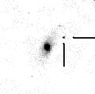
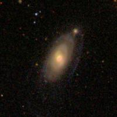
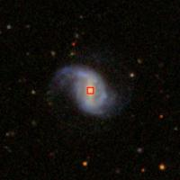
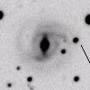
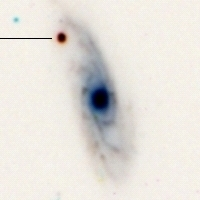
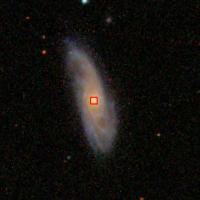
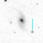
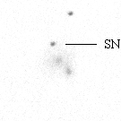

14.69250
12.74583


346.274417
-3.200278
{kind=link}
167.624250
55.160833


200.436875
31.246833

24.550417
41.655222
{kind=link}
20.317792
40.498694


179.059042
60.521972


47.205458
-7.033250
{kind=link}
338.094458
30.828694
{kind=link}

1.007958
-11.168750
{kind=link}

Click in the header to sort the SNe based on this criterion
A small and red square means that there is available spectrum in SDSS
| SN ID | z | R (kpc) | R (arcsec) | HOST ID | SN RA | SN DEC | SN TYPE | SN image | DR8 |
| 1999ef | 0.0391 | 15.915149 | 19.235384 | UGC 607 | 00h58m46.2s 14.69250 |
12d44m45s 12.74583 |
Ia | |
|
| 2000dn | 0.032 | 20.216592 | 30.016662 | IC 1468 | 23h05m05.8s 346.274417 |
-03d12m01s -3.200278 |
Ia |  |  |
| 2001ah | 0.058 | 40.140928 | 32.249031 | UGC 621 | 11h10m29.8s 167.624250 |
55d09m39s 55.160833 |
Ia pec | |
|
| 2001cj | 0.024 | 18.024826 | 35.902646 | UGC 8399 | 13h21m44.8s 200.436875 |
31d14m49s 31.246833 |
Ia | |
 |
| 2001eh | 0.037 | 28.529752 | 36.496575 | UGC 1162 | 01h38m12.1s 24.550417 |
41d39m19s 41.655222 |
Ia |  | NO SDSS IMAGE |
| 2002jy | 0.020 | 24.583053 | 58.940648 | NGC 477 | 01h21m16.3s 20.317792 |
40d29m55s 40.498694 |
Ia | |
|
| 2003cq | 0.033 | 22.286235 | 32.062439 | NGC 3978 | 11h56m14.2s 179.059042 |
60d31m19s 60.521972 |
Ia | |
|
| 2005eq | 0.029 | 18.591171 | 30.528675 | MCG -01-9-6 | 03h08m49.3s 47.205458 |
-07d02m00s -7.033250 |
Ia |  |  |
| 2006gr | 0.035 | 24.543433 | 33.241540 | UGC 12071 | 22h32m22.7s 338.094458 |
30d49m43s 30.828694 |
Ia |  | |
| 2008hj | 0.03786 | 16.486176 | 20.593688 | MCG -02-1-14 | 00h04m01.9s 1.007958 |
-11d10m07s -11.168750 |
Ia |  | |